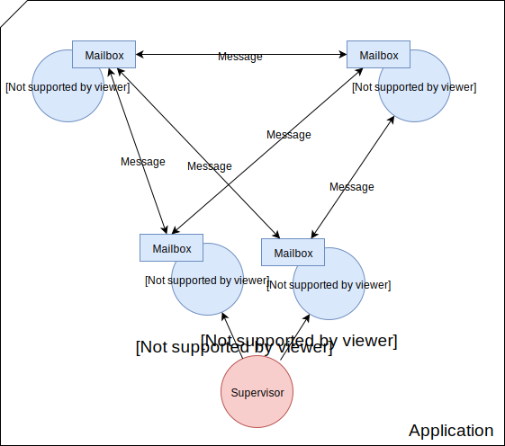

Elixir
Auf den Schultern eines Giganten
Meetup SoCraOs 06.03.2018
whoami
{
"name": "Henning Löhr",
"position": "Backend-Developer",
"company": "SALT AND PEPPER - Software Solutions",
"blog": "randomoutput.xyz",
"github": "github.com/hlhr",
"mail": "mail@randomoutput.xyz"
}
Elixir
Created by José Valim circa 2012, Former Rails Core Team Member
He was trying to make Rails really thread safe, found Erlang and created a new programming language by mistake.
Elixir is a dynamic, functional language designed for building scalable and maintainable applications.
Elixir leverages the Erlang VM (BEAM), known for running low-latency, distributed and fault-tolerant systems.
Functional programming
- ...
- Pattern matching
- Immutability
- ...
Erlang/OTP
Erlang is a programming language used to build massively scalable soft real-time systems with requirements on high availability.
Open Telecom Platform is set of Erlang libraries and design principles providing middleware to develop these systems.

- Ericsson, 1986
- Telecom systems / switches
- Open-sourced in 1998
- Everything is a proces
- Process creation is a lightweight operation
- Message passing is the only way to interact
- Processes share no resources
- Processes do what they are supposed to do or fail
If Java is 'write once, run anywhere', then Erlang is 'write once, run forever'.

- Amazon SimpleDB
- WhatsApp messaging servers (2 million connected users per server)
- Motorola (call processing)
- AdRole (ad bidding system)
- a lot mobile game backends
Elixir
Syntax
Demo
Elixir in Y MinutesElixir is a dynamically typed language, but...
defmodule LousyCalculator do
@spec add(number, number) :: number
def add(x, y), do: x + y
@spec multiply(number, number) :: number
def multiply(x, y), do: x * y
end
Elixir
OTP
Actor model
Demo
hot code reloading
run multiple versions of a module simultaneously
defmodule Customer do
use GenServer
...
def code_change(_old_vsn, state, _extra) do
# transform to new state
end
end
Umbrella Applications
project composed of many applications
+
communication via message passing
+
location transparency
(message exchange between different nodes)
=
microservices
...and there is more
- Dynamic supervisors
- Agent
- Task
- ETS
- Mnesia